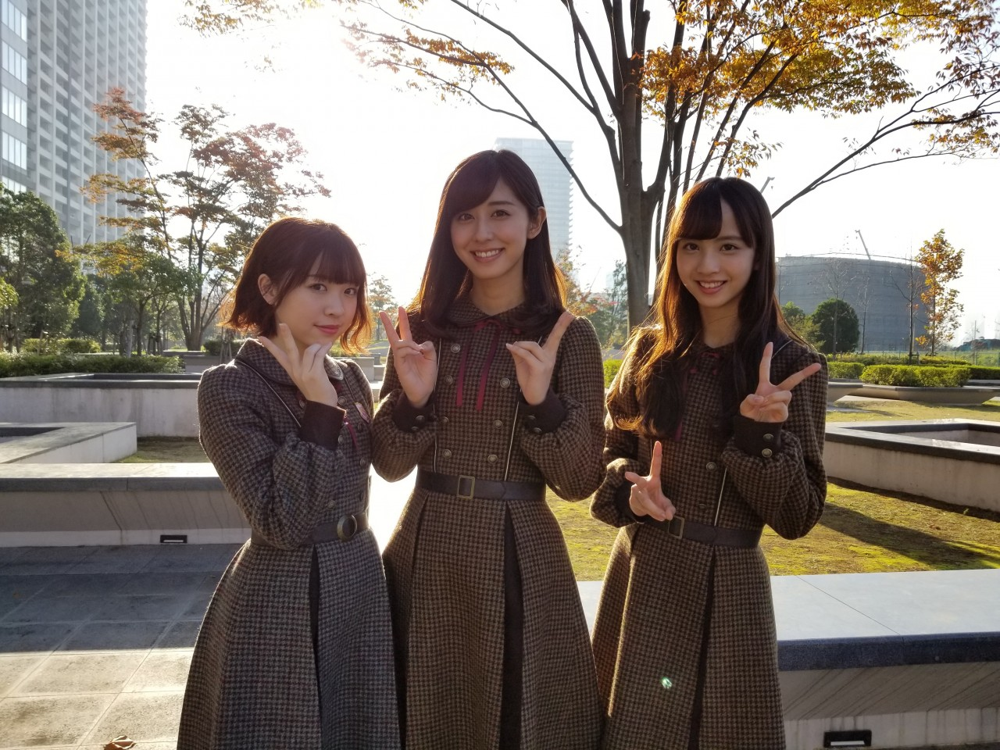
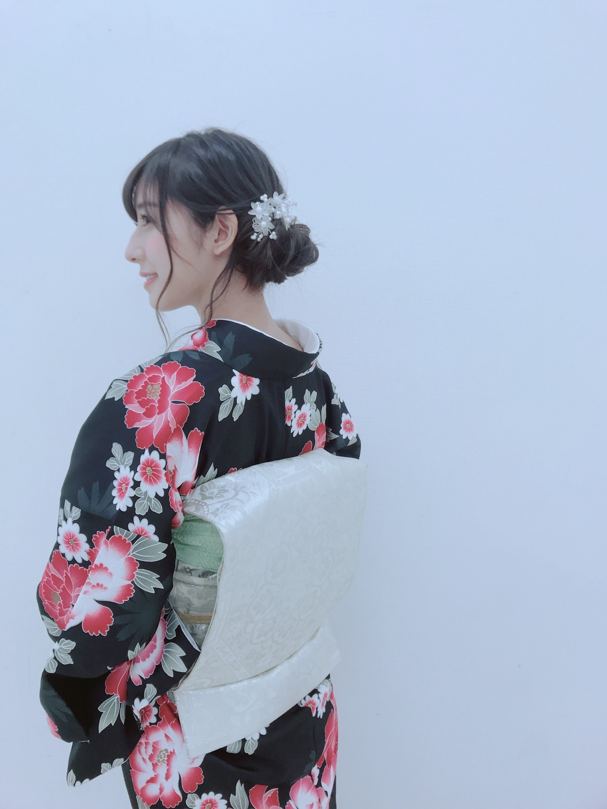

| 2017/11 30 Thu | 斎藤ちはる もう明日から12月 |
ちはるーむへようこそ
皆さんお元気ですか〜
東京ドームが終わったと思ったら
もう11月が終わってしまう...
1年が早すぎて驚きますね
１日１日大切に過ごさないといけないなと
ふと思います。
そして本日！
「箱根駅伝2018完全ガイド」に
私と、みり愛と、でんちゃんの3人で
掲載させていただいています。
私のお正月といえば駅伝なので
そんな駅伝に携わらせていただけて
とっても嬉しいです！！
駅伝の良さを、みり愛に沢山プレゼンしてみましたが...伝わってるといいなぁ
この機会に皆さんも是非！
箱根駅伝をチェックしてみてくださいね☺︎

アンダーアルバムの握手会が決定致しました！
日程はこちらです↓
1月14日 横浜
2月17日 名古屋
3月25日 京都
なんと、誕生日の2月17日に握手会が...！！
びっくり！！嬉しい！！
誕生日の日に被る事は
なかなかない事なので貴重ですね
そしてこの日は1〜5部なので
朝しか来られない方も、夜しか来られない方にもお会いできるので楽しみです\( ˆoˆ )/
21歳最初の日。
沢山の方にお会いできますように

載せてなかった、スペシャルイベントの
"ちーママ"姿。
久しぶりの #chihashot
愛未真洋まあやと行った夢の国で
愛未と2人で待っていたときの
近くの生垣がとても綺麗でした
ライトに照らされた葉っぱと
赤いお花のコントラストが素敵ですよね
暗い空に合う気がします
12月が明日に迫って、
今年の終わりが近づいてきました
今年を紅白という素敵なステージで
締めくくれることを嬉しく思います。
有り難いことです
よし！明日からも頑張るぞ〜
斎藤ちはる